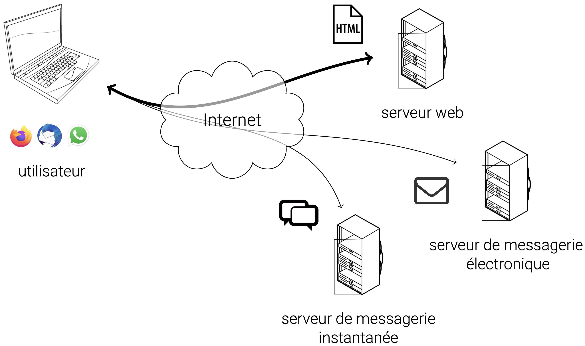
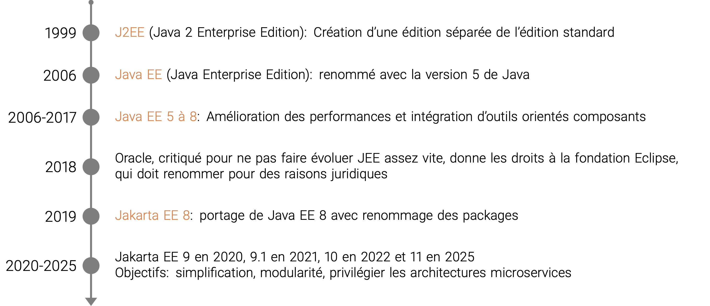

Le Web (rappels)
Internet et Web
Internet est un réseau de réseaux. Le Web est une partie de l’information circulant sur Internet.
Le Web (rappels)
Environnement client-serveur
- Client : ordinateur/logiciel qui demande une ressource. Le plus souvent, un navigateur web qui demande une ressource web ou qui sollicite un service web.
- Serveur : ordinateur/logiciel qui répond à cette demande et qui fournit la ressource ou le service.
Le Web (rappels)
Communication avec HTTP et URL
- Communication client-serveur avec le protocole de communication HTTP
- Requête HTTP : méthodes
GET,POST,PUT,DELETE, etc. en fonction de l'action demandée - Réponse HTTP : statut (ex:
200 OK,404 Not Found, etc.) + corps (ex: contenu HTML, JSON, etc.) - Serveurs et ressources identifiés par une URL (ex:
http://mastersd.univ-rouen.fr/index.html)
Web dynamique côté serveur
Page web générée à la demande, en fonction de la requête ou d'informations contextuelles, contrairement à une page web statique dont le contenu est identique à chaque consultation.
- Côté client : page incluant du code que le client exécute pour générer tout ou partie du contenu (JavaScript)
- Côté serveur : page générée par le serveur avant d'être envoyée au client (PHP, Python, Ruby, etc.)
Serveur web
Logiciel de service de ressources web, qui répond à des requêtes HTTP provenant de réseau public (Internet) ou privé (intranet).
- Capable de recevoir et de prendre en charge des requêtes HTTP
- Propose également des fonctionnalités de bases, e.g. gestion des accès, des sessions, des erreurs, etc.
Serveur web
Exemples de serveurs web
- Apache HTTP Server (httpd): https://httpd.apache.org/
- Nginx: https://nginx.org/
- Lighttpd: https://lighttpd.net/
- OpenLiteSpeed: https://openlitespeed.org/
- H2O: https://h2o.examp1e.net/
- Caddy: https://caddyserver.com/
- Microsoft Internet Information Services (IIS): https://www.iis.net/
Serveur d'application
- Un serveur HTTP ne peut servir que des ressources statiques (HTML, CSS, JS, images, etc.).
- Pour générer dynamiquement des ressources, il faut pouvoir exécuter des programmes dédiés.
- Ces programmes sont conçus avec des technologies spécifiques: Jakarta EE, .NET, Ruby on Rails, etc.
- Un serveur d'application est un serveur qui intègre des outils de prise en charge de ces technologies.
- Il s'agit le plus souvent de conteneurs qui fournissent l'environnement d'exécution pour ces technologies.
Serveur d'application
Exemples de serveurs d'application pour Jakarta EE
- GlassFish: https://glassfish.org/
- WildFly (anciennement JBoss): https://www.wildfly.org/
- Payara Server: https://www.payara.fish/
- Apache Geronimo: https://geronimo.apache.org/
- Apache TomEE: https://tomee.apache.org/
- IBM WebSphere Application Server: https://www.ibm.com/products/liberty
- Oracle WebLogic Application Server: https://www.oracle.com/fr/java/weblogic/
- Apache Tomcat: https://tomcat.apache.org/
- Eclipse Jetty: https://jetty.org/
Liste des serveurs qui prennent en charge l'ensemble des API Jakarta EE : https://jakarta.ee/compatibility/ (note: Tomcat et Jetty ne prennent en charge qu'une partie des spécifications JEE)
Jakarta EE
Plateforme Java
- Comprend des outils de développement et d'exécution des applications Java
- Environnement d'exécution (JRE), avec notamment la machine virtuelle Java (JVM)
- Environnement de développement (JDK), avec le JRE et des outils de développement (compilateur, débogueur, etc.)
- Comprend des bibliothèques et frameworks pour faciliter le développement
- bibliothèques standards
- outils additionnels: gestion de production, IDE, serveurs, etc.
Jakarta EE
Éditions de la plateforme Java
- Édition standard (Java SE): applications standalone (pour ordinateur de bureau)
- Édition entreprise (Jakarta EE): applications d'entreprise, avec architectures distribuées et fonctionnalités avancées de sécurité, performances, et évolutivité.
- Jakarta EE étend Java SE avec des outils pour:
- les architectures client-serveur
- les architectures distribuées, transactionnelles et portables
- les applications "critiques" (haute disponibilité, performance, sécurité)
Note: il existe 3 autres éditions : Java ME (Micro Edition), pour les appareils mobiles et embarqués; Java FX, pour les applications riches en interface utilisateur; et Java Card, pour les cartes à puce et les dispositifs à ressources limitées.
Jakarta EE
Historique
Jakarta EE
Liste des APIs de Jakarta EE 10
Jakarta EE
Profils, services et composants
- Ces API sont des spécifications des services fournis par Jakarta EE.
- Il en existe 3 types, regroupés par profil:
- Profil Core: services fondamentaux
- Profil Web: Profil Core + services spécifiques au Web
- Profil Full: Profil Web + services additionnels (e.g. mails)
- Les services sont mis en oeuvre par des composants Jakarta EE.
- Un composant Jakarta EE est une unité fonctionnelle autonome, déployé dans un conteneur
- 2 types de composants :
- Composants web pour les intéractions web: Servlets, Faces, WebSocket
- Composants métier pour la logique métier: EJB, CDI
Jakarta EE
Exemples
| Service | Spécification | Profil |
|---|---|---|
| Gestion des requêtes HTTP | Jakarta Servlet | Web |
| Interfaces utilisateur | Jakarta Faces | Web |
| Injection de dépendance | Jakarta CDI (Lite) | Core |
| Services Web REST | Jakarta RESTfull Web Services | Core |
| Traitement du format JSON | Jakarta JSON Processing et Jakarta JSON Binding | Core |
| Gestion d'email | Jakarta Mail | Full |
Jakarta EE
Structure et packaging d'une application Jakarta EE
- Une application JEE est composée d'un ou plusieurs modules, chacun regroupant ses propres composants et ressources:
- Module Web: composants web (Servlets, Faces, etc.) et ressources web (HTML, CSS, images, etc.)
- Module de beans entreprises: composants métier de type EJB
- Module de ressources: ressources partagées (fichiers de configuration, bibliothèques, etc.)
- Un module est empaqueté dans un fichier d'archive:
- WAR (Web Application Archive): pour les modules Web
- JAR (Java Archive): pour les modules de beans entreprises et de ressources
- EAR (Enterprise Application Archive): pour les applications JEE, qui regroupe plusieurs modules
- Un fois empaqueté, le module peut être déployé sur un serveur d'applications compatible
Jakarta EE
Exemple des modules Web
Une archive WAR doit contenir:
- Des ressources web (HTML, CSS, JS, images, etc.) accessibles publiquement
- Un dossier
WEB-INFcontenant les fichiers privés - Un sous-dossier
classesavec les classes Java compilées (.class) - Un sous-dossier
libavec les bibliothèques Java nécessaires (.jar) - Un descripteur de déploiement au format
XML(web.xmlpour les modules Web)
Architecture des applications web
Architecture 2-tiers (client-serveur)
- Architecture basique, pour des applications simples
- Tier Client: application avec interface utilisateur (HTML, CSS, JS)
- Tier Serveur: application avec accès aux données (ressources propres)
Architecture des applications web
Architecture 3-tiers
- Architecture classique pour les applications web
- Tier Présentation: interface utilisateur (HTML, CSS, JS)
- Tier Application: logique métier (traitement des données, logique métier)
- Tier Données: accès aux données (base de données, fichiers, etc.)
Architecture des applications Web
Architecture N-tiers
- Architecture plus complexe, avec plusieurs couches supplémentaires de traitement
- Les couches peuvent être réparties sur plusieurs serveurs distincts
- Permet de répartir la charge, d'améliorer la performance et la scalabilité
- Exemple:
Architecture des applications web
Modèle-Vue-Contrôleur pour le Web
- Architecture basée sur le patron de conception MVC
- Modèle: gestion des données et de la logique métier
- Vue: présentation des données (interface utilisateur)
- Contrôleur: gestion des interactions utilisateur et coordination entre le modèle et la vue
Architecture des applications web
Modèle-Vue-Contrôleur pour le Web
- Le modèle est souvent mis en œuvre par des composants métier (EJB, CDI)
- La vue et le contrôleur sont souvent mis en œuvre par des composants web (Servlets, Faces)
- Exemple:
Architecture des applications web
Architecture Orientée Service (SOA)
- Architecture basée sur des services indépendants
- Chaque service est autonome et expose une interface pour interagir avec d'autres services
- Permet de créer des applications modulaires, évolutives et maintenables
Architecture des applications web
Architecture microservices
- Similaire à SOA mais avec des services plus petits et plus légers
- Chaque microservice prend en charge une fonctionnalité spécifique
- Communication entre microservices via des API légères et uniformes (REST)